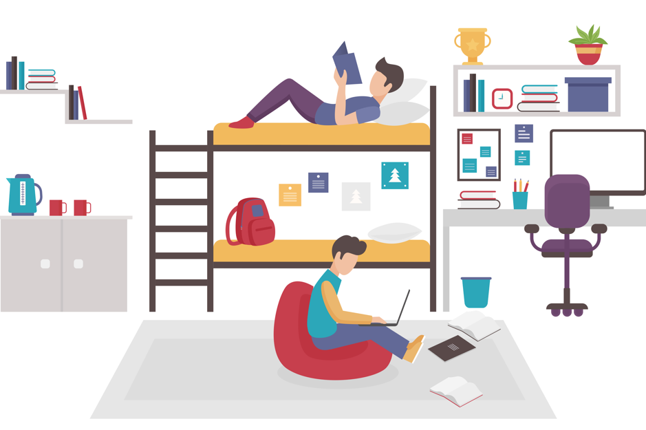
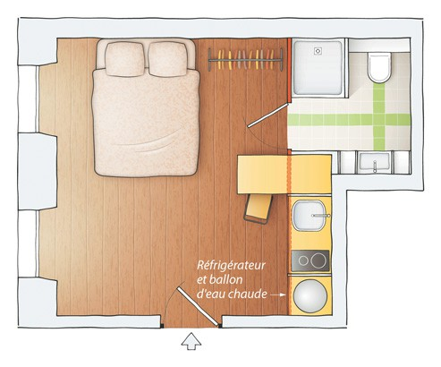

Le soluzioni
Alloggi studenteschi per borsisti, i CROUS
Se sei uno studente, un dottorando e a volte anche per gli stagisti, puoi fare domanda a una delle tante residenze per studenti. Ne esistono di due tipi :
- Le Cité U : sono generalement tra i 9 e i 12 metri quadri, delle piccole stanze con un bagno, una scrivania e un letto dentro il campus universitario o in prossimità
- I CROUS : sono un po piú grandi, si arriva fino al T2 e possono essere situati in diversi posti della cittá


Gli appartamenti condivisi
Queste sono soluzioni valide un po' per tutti, che tu sia uno studente o uno stagista, soprattutto se hai un budget limitato, o se sei in cerca di compagnia. In questi casi, una camera in un appartamento potrebbe essere la soluzione che fa per te. Come trovarla? Per prima cosa ti consiglio di vedere su facebook, ci sono spesso dei gruppi dove vengono pubblicate questo genere di informazioni. Per trovarli basta usare le parole chiavi "louer", "chambre" e "colocation" o "coloc" con il nome della città in cui starete.
Un altro posto dove trovarne dei siti specializzati, cercate "louer chambre ville" per sapere quali siti sono attivi nella vostra città. Eccone una lista dei più conosciuti in francia :
Gli studio e i piccoli appartamenti
Questo tipo di soluzione può essere presa in considerazione nel caso in cui tu abbia un budget più ampio. In questi casi potrai cercare delle soluzioni private non condivise, come gli studió che sono dei mono stanza, o dei piccoli appartamenti di una o due stanze. Per trovarli, il processo é simile al caso precedente, ci sono sia dei gruppi su facebook dove periodicamente sono postati degli annunci, che dei siti specializzati. In questi casi peró fate attenzione, se il prezzo é tropppo basso rispetto alla media, probabilmente si trattta di una truffa!
